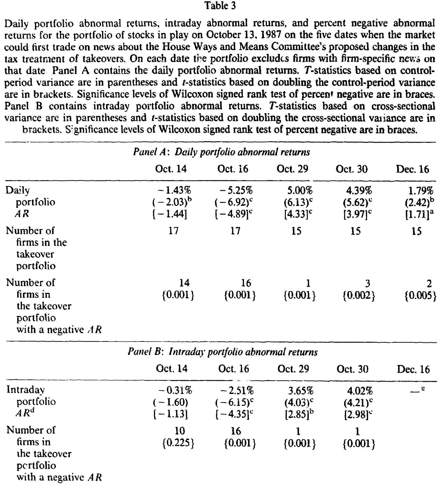
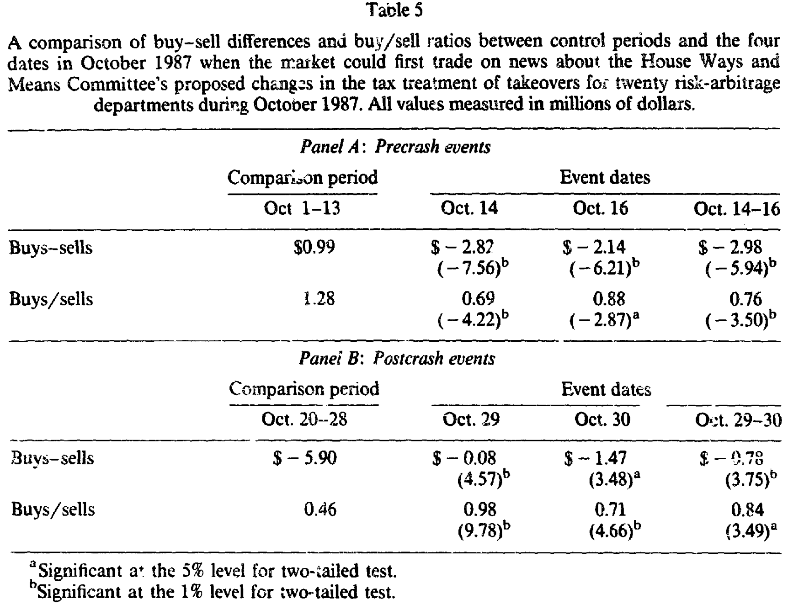
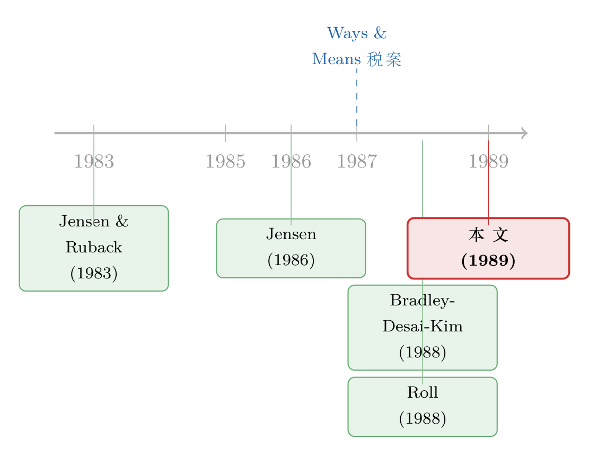

崩盘的前夜：一份税案，如何在 1987 年 10 月推倒了多米诺骨牌
本文读的是 Mitchell & Netter (1989, Journal of Financial Economics)：1987 年 10 月 13 日晚，美国众议院筹款委员会（House Ways and Means Committee）抛出一份限制敌意收购的税案，随后两天美股暴跌逾 10%——这场被淹没在「黑色星期一」阴影里的「崩盘前夜」，作者用事件研究指证，它的导火索是这份税案，而它本身又很可能点燃了 10 月 19 日的总崩盘。
1 一桩被忽略的「前夜」
提起 1987 年的股灾，几乎所有人脑子里只有一个数字：10 月 19 日，星期一，道琼斯工业指数单日暴跌 508 点。此后三十多年，关于这场崩盘的研究汗牛充栋，争论的焦点几乎都落在那个星期一——是程序化交易？是组合保险？还是期货与现货市场之间那条断裂的链条？
可作者在文章一开头就指出了一件几乎没人留意的怪事：真正异常的，并不是 19 日那一天，而是它之前的三天。从 10 月 14 日到 16 日，美股累计下跌超过 10%。这个跌幅有多反常？作者翻遍了那么多崩盘研究，没有一篇提到：这个连续三天的跌幅，超过了自 1940 年 5 月 13–14 日（德军突破法国防线）以来的任何一次一日、两日或三日跌幅。
于是一个自然的问题浮出水面：如果连「黑色星期一」都可能是被这三天「拽下水」的，那么不先弄清楚这三天为什么跌，关于这场崩盘的任何研究都是不完整的。
可问题恰恰在这里——这三天，没有发生任何「教科书级」的宏观坏消息。没有战争，没有央行突然加息，没有石油危机。市场就这么毫无征兆地塌了一角。那么，到底是什么？
2 一份「专治收购」的税案
作者把镜头对准了华盛顿。
1987 年 10 月，众议院筹款委员会正在赶制一份削减赤字的大型税案。但在这份税案里，藏着几条专门针对公司控制权交易、尤其是敌意收购（hostile takeover）的条款。它们的杀伤力体现在三处：
- 对用于收购另一家公司多数股权、或回购自家多数股权而新增的债务，每年超过
$5 million的利息支出不再可抵税； - 对敌意收购（取得目标公司
20%以上股份或资产）所用债务的利息，全部禁止抵扣； - 外加对绿邮（greenmail）收益征收
50%不可抵扣的消费税，并堵上用镜像子公司（mirror subsidiaries）避税的漏洞。
委员会的态度毫不掩饰，它在报告里直接写道：要「不仅取消收购的税收激励，更要为这类收购制造税收负向激励」。
这条政策的经济含义有多大？作者算了一笔账，简洁得近乎残忍。SEC 经济分析处的数据显示，1987 年 6 月到 1988 年 6 月，要约收购的融资里有 76% 来自债务。把这个比例套到一桩 $1 billion 的收购上：
$$ D = 0.76 \times \$1\,\text{billion} = \$760\,\text{million} $$
$$ rD = 0.10 \times \$760\,\text{million} = \$76\,\text{million} $$
在新税案下，超过 $5 million 门槛的那部分利息要补税：
$$ \Delta\text{Tax} = 0.34 \times (\$76 - \$5)\,\text{million} = \$24.1\,\text{million} $$
按 10% 贴现率，这笔每年多出来的税负折成现值，意味着目标公司价值要缩水：
$$ \Delta V = \frac{\$24.1\,\text{million}}{0.10} = \$241\,\text{million} \approx 24.1\% $$
如果是敌意收购，利息全部不可抵扣，缩水幅度还要更大——0.34 × $76M / 0.10，约等于价值的 25.8%。
这是什么概念？要知道，一桩收购被宣布时，目标公司股价平均上涨 25% 到 35%。这份税案，几乎是把收购能给股东带来的那块「蛋糕」直接抹掉。而且，它打击的远不止收购方与目标公司：连杠杆收购（leveraged buyout, LBO）、股票回购、债转股这类资本重组，都会被这条利息限制一并扫到。
但真正关键的一步还在更深处。按照 Jensen (1986) 的自由现金流（free cash flow）理论，敌意的「拆分式」收购之所以能创造价值，正是因为它逼着那些手握闲钱、却热衷于做减损价值收购的管理层吐出现金；债务本身则像一根缰绳，把管理层拴住，逼他们把现金流还给债权人，而不是拿去投负净现值的项目。换句话说，收购与收购的威胁，是约束「所有权与控制权分离」所产生代理成本的核心机制。（关于这条逻辑，可参见《现金为什么一定要「还」出去？——四十年后，重读 Jensen 的自由现金流》。）
所以这份税案如果通过，受伤的就不只是正在被收购的公司，而是几乎所有公司——因为它削弱的是悬在每一个管理层头上的那把「收购之剑」。
3 五个事件日：一条新闻的生与死
要把「税案」和「股价」对上号，作者得先精确地知道：关于这些反收购条款的消息，究竟是哪一刻、以什么方式传到市场的。
他们逐条翻查了道琼斯 Broadtape 和《华尔街日报》，得到一条干净的时间线。10 月 14 日之前，无论是 Broadtape、《华尔街日报》《纽约时报》还是《国会季刊周报》，都没有任何关于改变收购税收待遇的报道。直到 10 月 13 日傍晚的一场闭门党团会议，民主党议员才达成了包含反收购条款的税案；14 日，《华尔街日报》第一次把方案登了出来。
由此，作者锁定了五个「信息真正抵达市场、投资者第一次能据此交易」的事件日：
- 10 月 14 日——投资者第一次能就 13 日晚提出的税案交易；
- 10 月 16 日——15 日晚委员会以
23–13的清一色党派票通过税案，16 日见报； - 10 月 29 日——筹款委员会主席 Rostenkowski 在 28 日（盘后）暗示条款「可以修改」，投资者 29 日才能交易；
- 10 月 30 日——他在 29 日晚进一步发表正式声明，愿意「合理妥协」，30 日见报；
- 12 月 16 日——议员 Downey 上午对外宣布，参众两院协商中几乎所有反收购条款都被砍掉。
注意这条逻辑的对称性：前两个事件是「坏消息」（税案在推进），后三个是「好消息」（国会在退让）。一个清晰可证伪的假设随之成立——如果税案真的压低了股价，那么市场应当在 14 日、16 日下跌，在 29 日、30 日、12 月 16 日上涨。而且，由于前四条消息都在盘后发布，价格的反应大多应当出现在次日开盘后的早盘交易里。
4 识别策略：一把朴素却锋利的尺子
这篇文章的识别（identification）核心，是一个再经典不过的事件研究（event study）。它的可信度，恰恰来自前一节那条干净的时间线：消息的「首次到达时刻」被精确钉死，且这些时刻之前市场对这些条款一无所知。
剩下的难点只有一个——1987 年 10 月这段时间，市场波动率本身炸了。用平静期的方差去检验崩盘期的异常收益，t 值会被严重高估。作者借用 Brown and Warner (1985) 的办法，做了三重稳健处理：(a) 用事件前 150 个交易日的方差，再翻倍以容纳事件期方差上升；(b) 用事件期的横截面方差；(c) 非参数的 Wilcoxon 符号秩检验。三套尺子轮番上阵，结论才算站得住。
这是这篇文章在方法上特别诚实的地方：它没有藏着掖着用最有利的那把尺子，而是把最保守的「翻倍方差」也摆上桌——哪怕代价是某些事件日的显著性会掉下来。
5 主要结果：市场每一次都「按剧本」走
先看整体市场。如表 2 所对应的数据：标普 500 在 10 月 14 日跌 2.95%（t = -2.86），16 日跌 5.16%（t = -5.00）；随后在 29 日涨 4.93%（t = 4.77）、30 日涨 2.87%（t = 2.78）、12 月 16 日涨 2.17%（t = 2.11）。五个事件日，市场每一次都朝预测方向走，且在前四套（前/后事件期）方差下全部至少在 10% 水平显著。
即便把方差翻倍这把最钝的尺子拿出来，前四个事件日依然显著；只有 12 月 16 日的全天收益掉了下来。可作者紧接着补了一刀：12 月 16 日 2.17% 的涨幅里，有 2.01% 是在上午 11:58 那条消息见报之后才发生的——把方差换成同一段「正午到收盘」的窗口，这 2.01% 在 0.05 水平上显著。消息一到，价格就动，时间戳对得严丝合缝。
横截面证据更触目惊心：10 月 14 日标普 500 成分股里有 459 家（91.8%）下跌，16 日 478 家（95.6%）下跌；而到了好消息的 29 日，455 家（91%）上涨，30 日 416 家（83.2%），12 月 16 日 387 家（77.4%）。这不是几只权重股在拖动指数，而是全市场的集体投票。
但真正让这篇文章从「时间巧合」升级为「因果故事」的，是它的两块横截面证据。
第一块，是那些正「在 play」（被市场视为潜在收购目标）的公司。如果跌的真是「收购预期」，那么这些公司受到的冲击应当比整体市场更猛。结果正是如此：一个由在 play 公司构成的组合，在全部五个事件日都出现了方向正确、且显著的超额收益，盘后早盘交易里同样如此。

Table 3
第二块，是风险套利者（risk arbitrageurs）的反应。这群人靠押注收购能否完成吃饭，是对收购前景最敏感的「金丝雀」。作者发现，他们在税案推进时（前两个事件日）反应为负，在国会退让时（后三个事件日）反应为正——与假设完全吻合。

Table 5
同一个故事，整体市场、在 play 公司、风险套利者三条线索，在五个时间点上反复对上口供。这正是石川式叙事里最过瘾的一刻：当所有看似无关的证据，最后都指向同一个嫌疑人。
6 排除其他嫌疑：那三天，世界并没有一起跌
一个聪明的读者立刻会反驳：10 月 14–16 日，难道没有别的坏消息吗？
作者认认真真做了排除。其中最值得一提的「另一个嫌疑人」，是 10 月 14 日公布的、高于预期的贸易赤字。作者承认它对 14 日的下跌有边际贡献——但仅此一天，其余四个事件日并无其他重大事件。
更有力的反证来自国际市场。Roll (1988) 曾指出，10 月 19 日的崩盘是全球性的，很多市场在美国开盘前就已暴跌，因此倾向于认为崩盘源于某种「全球基本面因素」，而非美国本土事件。作者的回应很巧妙：既然这份税案不直接影响外国公司，那么如果 10 月 14–16 日全世界都跌得和美国差不多，本文的假设就站不住。
可数据说的是另一回事。10 月 14 日，标普 500 跌 2.95%，而 FT-Actuaries 世界（除美国）指数反而上涨了——本币计 +0.29%，美元计 +0.84%。整个 10 月 14–16 日，美国市场累计跌 10.44%，世界其他市场只跌了 1.34%（本币）和 0.6%（美元）。美国与世界之间的差距，在翻倍方差后依然在 0.01 水平显著。
换句话说：那三天的暴跌，是美国独有的。这恰恰是一个只打击美国公司的本土政策冲击该有的样子。
7 它如何「触发」了那个星期一
走到这里，文章的核心贡献已经清晰：它为那场被忽略的「崩盘前夜」找到了一个具体、可证伪、且证据链完整的基本面诱因——一份反收购税案。
而它更大胆的一笔，是把这个发现接回了 10 月 19 日。作者的逻辑是：10 月 14–16 日逾 10% 的暴跌，本身就构成了一个足以「触发」后续恐慌、组合保险抛售与流动性枯竭的初始冲击。Furbush (1989) 的证据显示，14 日和 16 日几乎没有组合保险在抛售——这反过来支持了作者的看法：14–16 日需要一个基本面的触发器，而程序化交易、组合保险这些「结构性因素」，至多是放大器，而非起点。
这是一个关于「第一张多米诺骨牌」的故事。市场结构的研究者们一直在问「骨牌为什么倒得这么快」，而这篇文章问的是一个更根本、也更被忽略的问题：是谁推倒了第一张。
8 文献脉络
把这篇文章放回它的时代，会看得更清楚。
它的根，扎在 1980 年代那场关于「公司控制权市场」的大辩论里。Jensen and Ruback (1983) 系统梳理了收购的实证证据，奠定了「收购平均为目标股东创造价值」的共识；Jensen (1986) 随后提出自由现金流理论，把敌意收购的价值来源讲成了对代理成本的约束；Bradley, Desai, and Kim (1988) 进一步量化了协同收益在收购双方之间的分配。到 1988 年，Jensen 估算 1977–1986 年间收购给目标股东带来的总收益高达 $346 billion——收购在当时已是一桩牵动整个市场的大生意。

正是在这样的背景下，1987 年那份税案才显得如此「致命」：它打击的，是被学界论证为创造价值、约束代理成本的核心机制。本文站在这条脉络的交汇点——它既是一篇方法干净的事件研究，也是一次对「政策如何通过收购预期定价整个市场」的实证检验。
顺着这条线往后看，关于「反收购立法的财富效应」的研究后来蔚为大观。读者如果对「一部法律如何砸掉股东的钱」这一主题感兴趣，可参见《「保护」股东的法律，怎么先砸了股东的钱？》与《四十亿美元，是怎样被一部法律「立」没的》——它们和本文，问的其实是同一个问题的不同侧面。
评论与延伸（Q&A + 研究方向）
Q：这只是「相关」，凭什么说是「因果」？同期会不会刚好有别的坏消息？
作者的防线有三层。其一，时间戳极精确——五个事件日的消息「首次可交易时刻」都被钉死，且盘后消息的反应集中在次日早盘。其二，方向对称——坏消息跌、好消息涨，连续五次都对，纯巧合的概率极低。其三，横截面与国际证据——在 play 公司跌得更狠、风险套利者反应方向正确、而不受该税案影响的国际市场几乎没跌。三条独立线索同时指向同一诱因，这比单看指数收益要硬得多。
Q：10 月 14 日不是还有个高于预期的贸易赤字吗？
作者承认它对 14 日当天有边际贡献，但强调其余四个事件日并无其他重大事件。而且贸易赤字无法解释为什么后三个「税案退让」的日子市场会上涨——它和税案假设在解释力上不是一个量级。
Q：把「崩盘前夜」和 10 月 19 日的总崩盘联系起来，是不是过度推论？
这是全文最弱、也最大胆的一环。作者只能论证「14–16 日的暴跌本身异常之大，足以充当触发器」，并借 Furbush (1989) 说明组合保险当时没在抛售，因此需要一个基本面起点。但「14–16 日触发了 19 日」终究是叙事性的，缺乏对传导链条的直接检验——这是读者应当保留的一份谨慎。
Q：税案最后没通过，那它怎么还能解释一场真实的暴跌？
恰恰因为它「差点通过」。市场定价的是预期：委员会以党派票通过、领导层力推，使其在那几天看起来很可能落地，股价据此重定价；当国会随后退让，预期反转，股价又涨回去。最终大部分条款被删（绿邮消费税和镜像子公司条款保留），与文章 12 月 16 日的「好消息上涨」完全自洽。
Q：为什么受伤的是「几乎所有公司」，而不只是收购双方？
因为收购的威胁本身就是一种治理机制。按自由现金流理论，悬在管理层头上的「被收购可能性」逼着他们少留闲钱、少做坏投资。税案削弱了这种威胁，等于放松了对全市场代理成本的约束——所以连没在 play 的公司也跟着跌，只是跌得没在 play 公司那么狠。
Q：这篇文章对今天还有什么意义？
它提供了一个范式：当一项税收/监管政策改变了「公司控制权交易」的可行性，市场会迅速、可观测地重定价，而且这种冲击是「政策属地特定」的（本土市场跌、海外不跌）。这把尺子今天依然好用——任何一次针对杠杆、并购、回购的税制变动，都可以用类似的事件研究去量它的市场含义。
接下来是几个由本文自然引出的研究方向。
1）把「政策预期」拆进债券与信用市场。
【经济故事】本文只看了股票。但反收购税案直接打击的是债务融资的可抵扣性，那么收购方、LBO 标的的债券利差、以及高收益债市场，理应在同样的五个事件日里反向波动。信用市场对「杠杆收购可行性」的定价，可能比股票更直接。
【可行性】中。需要 1987 年的公司债日度（甚至日内）报价，数据在那个年代较稀疏是主要障碍；识别策略可直接沿用本文的五个事件日，干净度高。
2）外资持有人是「缓冲垫」还是「放大器」？
【经济故事】本文用「国际市场没跌」做了排除。一个自然的延伸是：那些外资持股比例高的美国公司，在这几天的跌幅是否系统性地不同？如果反收购税案对外国收购方反而有利（Grundfest 1987 在反对信里就提到，债务对外国公司仍可抵扣，可能鼓励外资收购），那么高外资关注度的标的，定价反应可能被扭曲。
【可行性】中。需要 1987 年的机构/外资持股数据（13F 等），与个股事件日超额收益做横截面回归。识别依赖持股的外生性，需小心。
3）「政策不确定性」的盘中定价速度。
【经济故事】本文已经发现价格反应集中在盘后消息的次日早盘。利用日内数据，可以更精细地刻画市场「消化一条立法新闻」需要多久、是否存在过度反应与回调，进而把「立法风险」纳入波动率定价。
【可行性】高（对现代样本）/ 低（对 1987 年本身）。当代有大量立法事件 + 高频数据可做；要复刻 1987 年则受限于历史日内数据的可得性。
我的判断
这篇文章的贡献，不在于方法多新——事件研究在 1989 年早已是成熟工具——而在于问对了问题。当整个学界盯着 10 月 19 日时，它把目光移到了被忽略的前三天，并用一条精确到分钟的新闻时间线、一个对称可证伪的假设、外加股票/在 play 公司/风险套利者/国际市场四重证据，把「税案 → 暴跌」的因果故事钉得相当结实。这是「叙事 + 数据」结合的典范。
它最薄弱的一环，是从「税案解释了 14–16 日」跨到「14–16 日触发了 19 日」——后半句更多是论证性的推断，缺乏对传导机制的直接检验。读者应当把这篇文章的确证部分（前夜的诱因）和推测部分（对总崩盘的触发）分开来看。此外，事件期方差暴涨带来的统计挑战，作者虽用三套方法应对，但「翻倍方差」是否足够保守，仍可商榷。
我最想看到的后续，是把这套识别搬到信用市场：既然税案的刀刃直指债务可抵扣性，那么债与股在这五天里的反应是否一致、谁先动、谁动得更多——这或许能告诉我们，市场究竟是在为「收购溢价的消失」定价，还是为「整条信用链条的收紧」定价。
参考文献
Bradley, M., Desai, A., & Kim, E. H. (1988). Synergistic gains from corporate acquisitions and their division between the stockholders of target and acquiring firms. Journal of Financial Economics 21(1), 3–40.
Brown, S. J., & Warner, J. B. (1985). Using daily stock returns: The case of event studies. Journal of Financial Economics 14(1), 3–31.
Jensen, M. C. (1986). Agency costs of free cash flow, corporate finance, and takeovers. American Economic Review 76(2), 323–329.
Jensen, M. C., & Ruback, R. S. (1983). The market for corporate control: The scientific evidence. Journal of Financial Economics 11(1–4), 5–50.
Mitchell, M. L., & Lehn, K. (1989). Do bad bidders become good targets? Working paper.
Mitchell, M. L., & Netter, J. M. (1989). Triggering the 1987 stock market crash: Antitakeover provisions in the proposed House Ways and Means tax bill? Journal of Financial Economics 24(1), 37–68.
Roll, R. (1988). The international crash of October 1987. Financial Analysts Journal 44(5), 19–35.